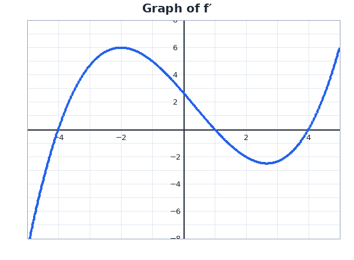

Section I, Part A · Multiple choice · No calculator · 60 minutes
- Find the average value of f(x) = 4sin(x) on [0, π/3].(A)2(B)√3(C)2π/3(D)6/πAnswer: (D) 6/π
- f_avg = (1/(b − a))∫ from a to b f(x) dx.
- Antiderivative: F(x) = -4cos(x).
- F(π/3) = -2 and F(0) = -4.
- F(π/3) − F(0) = -2 − (-4) = 2.
- f_avg = 2 ÷ π/3 = 6/π.
- The graph of f′, the derivative of f, is shown. At which x-value(s) does f have a relative minimum?

(A)x = −4 and x = 4(B)x = 1(C)x = −4 and x = 1 and x = 4(D)x = −3 and x = 5Answer: (A) x = −4 and x = 4- f has a relative maximum where f′ changes from positive to negative, and a relative minimum where f′ changes from negative to positive.
- f′ changes sign at −4, 1, 4.
- Relative minimum: x = −4 and x = 4.
- Which shows the variables of y′ = 4x²/y² correctly separated?(A)y dy = 4x dx(B)dy = 4x² dx(C)(1/y²) dy = 4x² dx(D)y² dy = 4x² dxAnswer: (D) y² dy = 4x² dx
- Get all y terms with dy and all x terms with dx.
- y² dy = 4x² dx.
- Find d/dx [∫ from -2 to e^x (t² + 1) dt].(A)e^(3x) + e^x(B)e^(3x) + e^x - 5(C)e^(2x) + 1(D)(x² + 1)e^xAnswer: (A) e^(3x) + e^x
- FTC with the chain rule: d/dx ∫ from a to u(x) f(t) dt = f(u(x))·u′(x).
- Here f(t) = t² + 1, u(x) = e^x, u′(x) = e^x.
- The lower limit -2 is a constant, so it adds nothing.
- Result: e^(3x) + e^x.
- Which function is an antiderivative of f(x) = 6sec(x)² + 6/x?(A)6ln(2x) + 6sin(2x)/cos(2x)(B)12tan(x)sec²(x) - 6/x²(C)6ln|x| + 6sin(x)/cos(x) - 1(D)12ln(x) + 12sin(x)/cos(x)Answer: (C) 6ln|x| + 6sin(x)/cos(x) - 1
- F is an antiderivative of f if F′(x) = f(x).
- Differentiate each choice; (6ln|x| + 6sin(x)/cos(x) - 1)′ = 6sec(x)² + 6/x.
- A tank holds V(t) = 3t² + 9t liters after t minutes. Find the instantaneous rate of change of V at t = 6.(A)6 L/min(B)162 L/min(C)45 L/min(D)27 L/minAnswer: (C) 45 L/min
- V′(t) = 6t + 9.
- V′(6) = 45 L/min.
- Find all x where f(x) = -2x³ - 3x² + 36x - 1 has a horizontal tangent line.(A)x = -3 or x = 2(B)x = -3(C)x = 0(D)x = 3 or x = -2Answer: (A) x = -3 or x = 2
- f′(x) = -6x² - 6x + 36.
- Set f′(x) = 0 and factor.
- x = -3 or x = 2.
- f is continuous on [-4, 5], f(-4) < 0, and f(5) > 0. Which theorem guarantees a zero in (-4, 5)?(A)Intermediate Value Theorem(B)Mean Value Theorem(C)Squeeze Theorem(D)Extreme Value TheoremAnswer: (A) Intermediate Value Theorem
- f is continuous on the closed interval, and 0 lies between the endpoint values (one negative, one positive).
- So the Intermediate Value Theorem guarantees a zero in the open interval.
- Intermediate Value Theorem.
- Evaluate lim (x → 3) (x² - x - 6)/(x² - 8x + 15).(A)does not exist(B)-5/2(C)0(D)-5Answer: (B) -5/2
- Direct substitution gives 0/0, an indeterminate form.
- Factor: (x² - x - 6) = (x + 2)(x - 3) and (x² - 8x + 15) = (x - 3)(x - 5).
- Cancel the common factor: the expression equals (x + 2)/(x - 5) for x ≠ 3.
- Substitute x = 3: -5/2.
- Find f‴(x) for f(x) = 5e^x + 5ln(x).(A)5e^x + 10/x³(B)-5e^x - 10/x³(C)5e^x + 5/x(D)5e^x - 30/x⁴Answer: (A) 5e^x + 10/x³
- Differentiate, then differentiate again (three times in all).
- f‴(x) = 5e^x + 10/x³.
- The graph of f′ is shown. On which interval(s) is f increasing?
 (A)(−3, −1) and (4, ∞)(B)(−∞, −3) and (−1, 4)(C)(−3, ∞)(D)where f′ is increasingAnswer: (B) (−∞, −3) and (−1, 4)
(A)(−3, −1) and (4, ∞)(B)(−∞, −3) and (−1, 4)(C)(−3, ∞)(D)where f′ is increasingAnswer: (B) (−∞, −3) and (−1, 4)- f is increasing where f′ is positive (above the x-axis).
- f′ = 0 at −3, −1, 4.
- f is increasing on (−∞, −3) and (−1, 4).
- A solid has base bounded by y = √x, the x-axis, and x = 0 to x = 4. Cross sections perpendicular to the x-axis are squares with a side in the base. Find the volume.(A)16(B)16/3(C)8(D)8πAnswer: (C) 8
- Each cross section has side (or diameter) s = √x, so its area is A(x) = s² = (√x)².
- V = ∫ from 0 to 4 A(x) dx = ∫ from 0 to 4 x dx.
- Antiderivative: F(x) = x²/2.
- F(4) = 8 and F(0) = 0.
- F(4) − F(0) = 8 − 0 = 8.
- V = 8.
- f′(x) = -x² + 5x. On what interval(s) is f increasing?(A)(0, 5)(B)(-∞, 0) ∪ (5, ∞)(C)(-∞, 5)(D)(0, ∞)Answer: (A) (0, 5)
- f′(x) = -(x - 0)(x - 5)
- Sign chart: f′ is negative outside [0, 5] and positive inside.
- f is increasing on (0, 5).
- C′(x) is the marginal cost, in dollars per item, of producing x items. What does ∫ from 2 to 8 C′(x) dx represent (units: dollars)?(A)the average rate of change from x = 2 to x = 8(B)the value of C at x = 8(C)the additional cost of increasing production from 2 to 8 items(D)the rate at x = 8Answer: (C) the additional cost of increasing production from 2 to 8 items
- The integral of a rate gives the net amount accumulated.
- the additional cost of increasing production from 2 to 8 items.
- Let h(x) = f(g(x)). You know g(4) = 0, g′(4) = 5, f′(4) = 4, and f′(0) = 6. Find h′(4).(A)6(B)20(C)30(D)11Answer: (C) 30
- h′(4) = f′(g(4)) · g′(4).
- = f′(0) · (5) = 30.
- Which differential equation could produce the slope field shown?
 (A)y′ = x − y²(B)y′ = y² − x(C)y′ = xy(D)y′ = y(2 − y)Answer: (D) y′ = y(2 − y)
(A)y′ = x − y²(B)y′ = y² − x(C)y′ = xy(D)y′ = y(2 − y)Answer: (D) y′ = y(2 − y)- Check a few segments. At (-1, 1) the segment has slope 1.
- Compare with each choice at the same point: y′ = y(2 − y): 1; y′ = x − y²: −2; y′ = y² − x: 2; y′ = xy: −1.
- Also check where segments are horizontal (slope 0) and where slopes are steep, then confirm only one equation fits everywhere.
- Does the Mean Value Theorem apply to f(x) = 1/x on [-1, 4]?(A)Yes: f is continuous on the closed interval and differentiable on the open interval(B)No: f is not differentiable at x = 0(C)No: f is not continuous at x = 0(D)No: f(a) must equal f(b)Answer: (C) No: f is not continuous at x = 0
- MVT needs continuity on [a, b] and differentiability on (a, b).
- No: f is not continuous at x = 0.
- Find f′(x) for f(x) = sin(6x² - 3).(A)cos(6x² - 3)(B)12xcos(6x² - 3)(C)12xcos(6x² - 3) + 1(D)-12xcos(6x² - 3)Answer: (B) 12xcos(6x² - 3)
- Chain rule: the inside is u = 6x² - 3, with u′ = 12x.
- Differentiate the outside, keep the inside, then multiply by u′.
- f′(x) = 12xcos(6x² - 3).
- On what interval(s) is f(x) = x⁴ + 4x³ - 18x² + 3x concave up?(A)(-∞, -3)(B)(-3, 1)(C)(-∞, -3) ∪ (1, ∞)(D)(1, ∞)Answer: (C) (-∞, -3) ∪ (1, ∞)
- f″(x) = 12x² + 24x - 36.
- f″ > 0 outside the zeros.
- (-∞, -3) ∪ (1, ∞).
- ∫ from -1 to 3 f(x) dx = 10 and ∫ from 1 to 3 f(x) dx = -1. Find ∫ from -1 to 1 f(x) dx.(A)11(B)9(C)10(D)-11Answer: (A) 11
- Because -1 < 1 < 3, ∫ from -1 to 3 = ∫ from -1 to 1 + ∫ from 1 to 3.
- So 10 = ∫ from -1 to 1 f(x) dx - 1.
- ∫ from -1 to 1 f(x) dx = 10 − -1 = 11.
- Find d/dx [∫ from 2 to x ln(1 + t²) dt].(A)ln(1 + x²) - ln(1 + (2)²)(B)ln(1 + x²)(C)0(D)∫ ln(1 + x²) dxAnswer: (B) ln(1 + x²)
- FTC with the chain rule: d/dx ∫ from a to u(x) f(t) dt = f(u(x))·u′(x).
- Here f(t) = ln(t² + 1), u(x) = x, u′(x) = 1.
- The lower limit 2 is a constant, so it adds nothing.
- Result: ln(1 + x²).
- Find f′(-1) for f(x) = (4x - 1)³.(A)-125(B)-300(C)600(D)300Answer: (D) 300
- Chain rule: the inside is u = 4x - 1, with u′ = 4.
- Differentiate the outside, keep the inside, then multiply by u′.
- f′(x) = 12(4x - 1)².
- f′(-1) = 300.
- At x = 0, which describes f(x) = x^(2/3)?(A)differentiable (and continuous)(B)continuous but not differentiable (corner)(C)continuous but not differentiable (cusp)(D)not continuous, so not differentiableAnswer: (C) continuous but not differentiable (cusp)
- Differentiable implies continuous; continuity alone does not guarantee differentiability.
- Compare the one-sided slopes at the point.
- continuous but not differentiable (cusp).
- Evaluate lim (x → ∞) √(9x² + x)/(x + 1).(A)0(B)∞(C)1(D)3Answer: (D) 3
- Look at how the top and bottom grow as x moves away from 0.
- Divide by x: √(9 + 1/x)/(1 + 1/x) → √9/1 = 3.
- The limit is 3.
- A rectangle has perimeter 256 m. What is the largest possible area?(A)16384 m²(B)4224 m²(C)64 m²(D)4096 m²Answer: (D) 4096 m²
- Perimeter: 2x + 2y = 256, so y = 128 - x.
- A = x(128 - x); A′ = 128 - 2x = 0 gives x = 64.
- A = 4096 m².
- Which limit of a right Riemann sum equals ∫ from 2 to 4 x² dx?(A)lim (n → ∞) Σ (k = 1 to n) (2 + 2k/n)² · (2/n)(B)lim (n → ∞) Σ (k = 1 to n) (2 + k/n)² · (2/n)(C)lim (n → ∞) Σ (k = 1 to n) (2 + 2k/n)² · (1/n)(D)lim (n → ∞) Σ (k = 1 to n) (2k/n)² · (2/n)Answer: (A) lim (n → ∞) Σ (k = 1 to n) (2 + 2k/n)² · (2/n)
- Δx = (b − a)/n = 2/n.
- Right endpoints: xₖ = 2 + k·Δx = 2 + 2k/n.
- The sum is Σ f(xₖ)Δx with f(x) = x², so the term is (2 + 2k/n)² · (2/n).
- The other choices use the wrong Δx, the wrong step inside f, or the wrong starting point.
- Evaluate ∫ from -6 to 0 2/(x² + 6x + 18) dx.(A)π(B)π/3(C)2π/3(D)4/3Answer: (B) π/3
- At x = 0, u = 1; at x = -6, u = -1.
- Antiderivative: F(x) = 2tan⁻¹(x/3 + 1)/3.
- F(0) = π/6 and F(-6) = -π/6.
- F(0) − F(-6) = π/6 − (-π/6) = π/3.
- Find ∫ (x³ + 1/(√x)) dx.(A)(1/4)x⁴ + 2√x + C(B)(1/2)x⁴ + 4√x + C(C)x⁴ + √x + C(D)3x² - 1/(2x√x) + CAnswer: (A) (1/4)x⁴ + 2√x + C
- Integrate term by term: ∫ x³ dx = x⁴/4; ∫ x^(-1/2) dx = 2√x.
- Add the constant of integration: (1/4)x⁴ + 2√x + C.
- The general solution of y′ = -8y is y = Ce^(-8x). Find C if y(0) = 16.(A)C = 24(B)C = -2(C)C = -128(D)C = 16Answer: (D) C = 16
- Substitute x = 0: y(0) = Ce⁰ = C.
- C = 16.
- Find ∫ x²(x³ + 7)⁵ dx.(A)(x³/3)(1/6)(x³ + 7)⁶ + C(B)(1/18)(x³ + 7)⁶ + C(C)(1/15)(x³ + 7)⁵ + C(D)(1/6)(x³ + 7)⁶ + CAnswer: (B) (1/18)(x³ + 7)⁶ + C
- Let u = x³ + 7, so x² dx = (1/3) du.
- (1/3)∫ u⁵ du = (1/18)u⁶ + C.
- = (1/18)(x³ + 7)⁶ + C.